Regularization
09/30/2022
Robert Utterback (based on slides by Andreas Muller)
Linear Regression Review
Linear Models for Regression
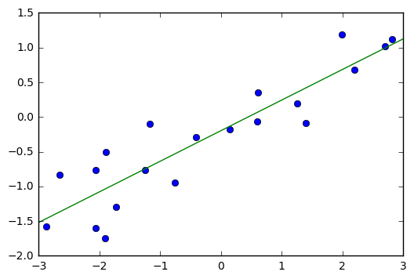
\[ \hat{y} = w^T \vec{x} + b = \sum_{i=1}^p w_i x_i + b \]
Ordinary Least Squares
\[ \hat{y} = w^T \vec{x} + b = \sum_{i=1}^p w_i x_i + b\] \[ \min_{\vec{w} \in \mathbb{R}^p, b\in\mathbb{R}} \sum_{i=1}^m \norm{w^T \vec{x}^{(i)} + b - y^{(i)}}^2 \]
Unique solution if \(\vec{X} = (\vec{x}^{(1)},\ldots,\vec{x}^{m})^T\) has full column rank.
Ridge Regression
Ridge Regression
\[ \min_{\vec{w} \in \mathbb{R}^p, b\in\mathbb{R}} \sum_{i=1}^m \norm{w^T \vec{x}^{(i)} + b - y^{(i)}}^2 + \alpha \ltwo{w} \]
- Always has a unique solution
- \(\alpha\) is tuning parameter.
Regularized Empirical Risk Minimization
\[ \min_{f \in F} \sum_{i=1}^m L(f(\vec{x}^{(i)}),y^{(i)}) + \alpha R(f) \]
Reminder on model complexity

Ames Housing Dataset
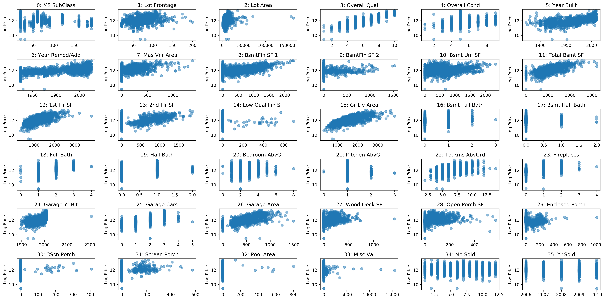
print(X.shape, y.shape)
(1460, 80) (1460,)
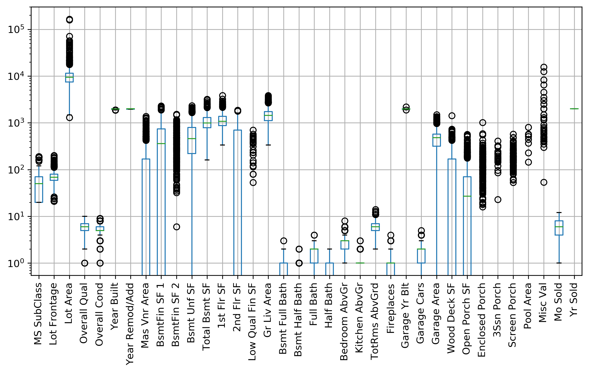
Coefficient of determination
\[ R^2(y,\hat{y}) = 1 - \frac{\sum_{i=1}^{m} (y^{(i)} - \hat{y}^{(i)})^2}{\sum_{i=1}^{m} (y^{(i)} - \overline{y})^2 } \] \[ \overline{y} = \frac1m \sum_{i=1}^{m} y^{(i)} \] Can be negative for biased estimators - or for the test set!
Preprocessing
cat_pre = make_pipeline( # standardize missing, then OHE
SimpleImputer(strategy='constant', fill_value='NA'),
OneHotEncoder(handle_unknown='ignore'))
num_pre = make_pipeline(SimpleImputer(),StandardScaler())
from sklearn.compose import make_column_selector, \
make_column_transformer
full_pre = make_column_transformer(
(cat_pre, make_column_selector(dtype_include='object')),
remainder=num_pre)
X_train, X_test, y_train, y_test = \
train_test_split(X, y, random_state=2)
pipe = make_pipeline(full_pre, LinearRegression())
print(cross_val_score(pipe, X_train, y_train, cv=5))
[0.818 0.885 0.892 0.905 0.887]
Note on Skewed Targets
y_train.hist(bins='auto')

np.log(y_train).hist(bins='auto')

Handling Transformed Targets
cross_val_score(pipe, X_train, y_train, cv=5)
| 0.818 | 0.885 | 0.892 | 0.905 | 0.887 |
from sklearn.compose import TransformedTargetRegressor
log_linreg = TransformedTargetRegressor(
LinearRegression(), func=np.log, inverse_func=np.exp)
reg_pipe = make_pipeline(full_pre, log_linreg)
cross_val_score(reg_pipe, X_train, y_train, cv=5)
| 0.882 | 0.896 | 0.905 | 0.902 | 0.911 |
Linear Regression vs. Rdige
from sklearn.compose import TransformedTargetRegressor
cross_val_score(reg_pipe, X_train, y_train, cv=5)
| 0.882 | 0.896 | 0.905 | 0.902 | 0.911 |
log_ridge = TransformedTargetRegressor(
Ridge(), func=np.log, inverse_func=np.exp)
ridge_pipe = make_pipeline(full_pre, log_ridge)
cross_val_score(ridge_pipe, X_train, y_train, cv=5)
| 0.898 | 0.911 | 0.942 | 0.909 | 0.914 |
Tuning Ridge Regression
pipe = Pipeline([('pre', full_pre), ('ridge', log_ridge)])
param_grid = {'ridge__regressor__alpha': np.logspace(-3, 3, 30)}
grid = GridSearchCV(pipe, param_grid, return_train_score=True)
grid.fit(X_train, y_train)
print(f"{grid.best_score_:3f}")
0.924953

Triazine Dataset
triazines = fetch_openml('triazines', version=1)
print(triazines.data.shape)
(186, 60)
pd.Series(triazines.target).hist()

X_train, X_test, y_train, y_test = \
train_test_split(triazines.data, triazines.target,
random_state=0)
print(cross_val_score(LinearRegression(), X_train, y_train, cv=5))
print(cross_val_score(Ridge(), X_train, y_train, cv=5))
[ 0.213 0.129 -0.796 -0.222 -0.155] [0.263 0.455 0.024 0.23 0.036]
param_grid = {'alpha': np.logspace(-3,3,30)}
cv = RepeatedKFold(n_splits=5, n_repeats=10, random_state=42)
grid = GridSearchCV(Ridge(), param_grid,
cv=cv, return_train_score=True)
grid.fit(X_train, y_train)

Plotting coefficient values for LR
lr = LinearRegression().fit(X_train, y_train)
plt.scatter(range(X_train.shape[1]), lr.coef_,
c=np.sign(lr.coef_), cmap="bwr_r")
plt.xlabel('feature index'); plt.ylabel('regression coefficient')

Ridge Coefficients
ridge = grid.best_estimator_
plt.scatter(range(X_train.shape[1]), ridge.coef_,
c=np.sign(ridge.coef_), cmap="bwr_r")
plt.xlabel('feature index'); plt.ylabel('regression coefficient')

Boston LR Coefficients
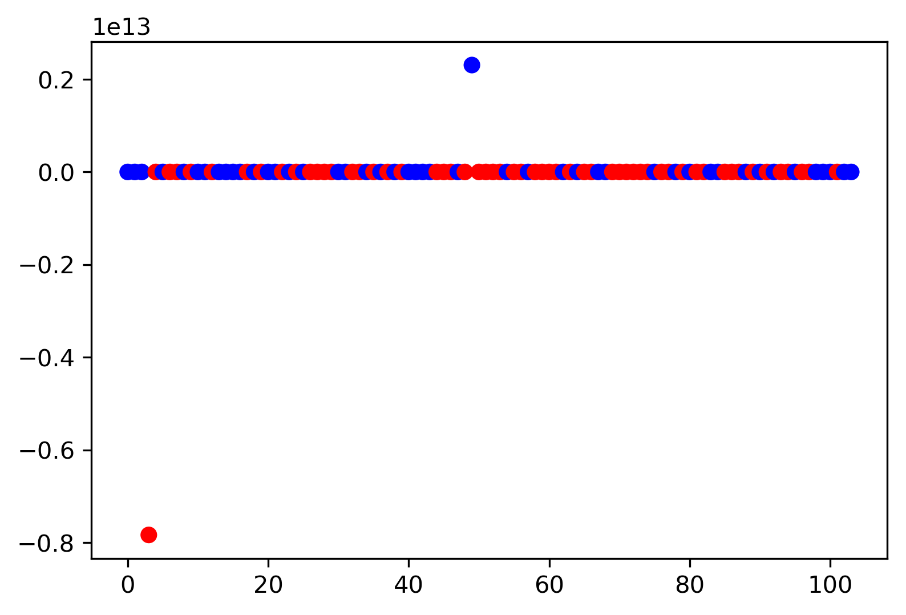
Ridge Coefficients By alpha
ridge100 = Ridge(alpha=100).fit(X_train, y_train)
ridge1 = Ridge(alpha=1).fit(X_train, y_train)
plt.figure(figsize=(8, 4))
plt.plot(ridge1.coef_, 'o', label="alpha=1")
plt.plot(ridge.coef_, 'o', label=f"alpha={ridge.alpha:.2f}")
plt.plot(ridge100.coef_, 'o', label="alpha=100")
plt.legend()

Learning Curves
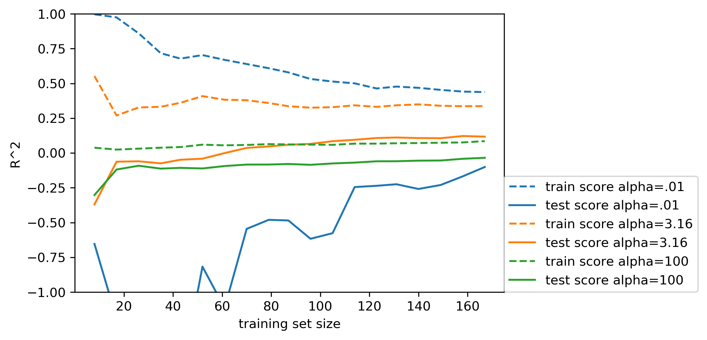
Lasso Regression
Lasso Regression
\[ \min_{w \in \mathbb{R}^p, b\in\mathbb{R}} \sum_{i=1}^m \norm{w^T \vec{x}^{(i)} +b - y^{(i)}}^2 + \alpha \lone{w} \]
- Shrinks \(\vec{w}\) towards zero like Ridge
- Sets some \(\vec{w}\) exactly to zero
- Automatic feature selection!
Grid-Search for Lasso
from sklearn.linear_model import Lasso
param_grid = {'alpha': np.logspace(-5, 0, 20)}
grid = GridSearchCV(Lasso(max_iter=10000), param_grid, cv=10)
grid.fit(X_train, y_train)
print(grid.best_params_)
print(f"{grid.best_score_:.3f}")
{'alpha': 0.0012742749857031334}
0.169
Grid-Search for Lasso
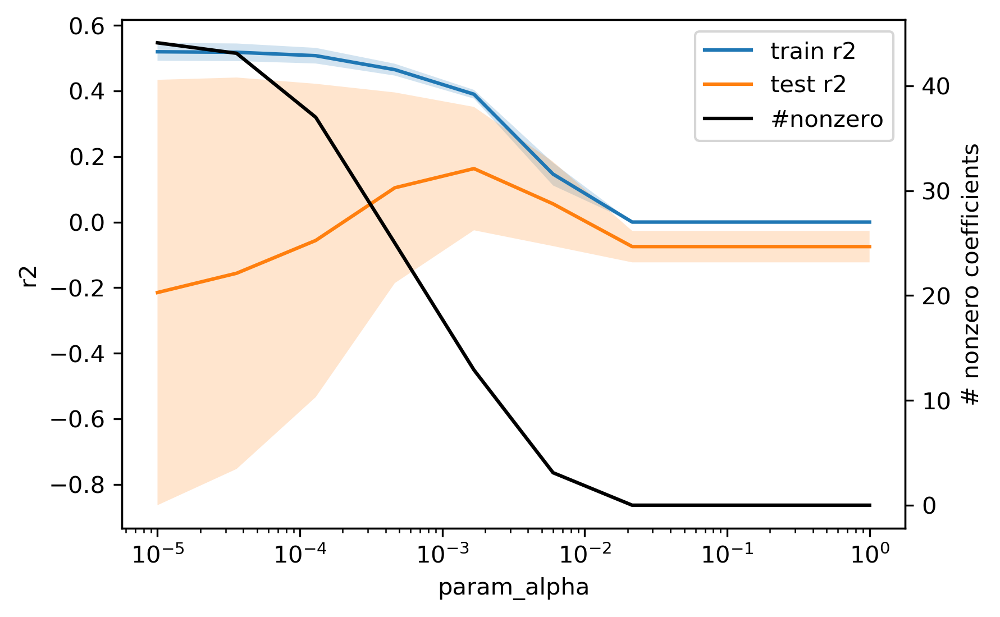
Coefficients for Lasso
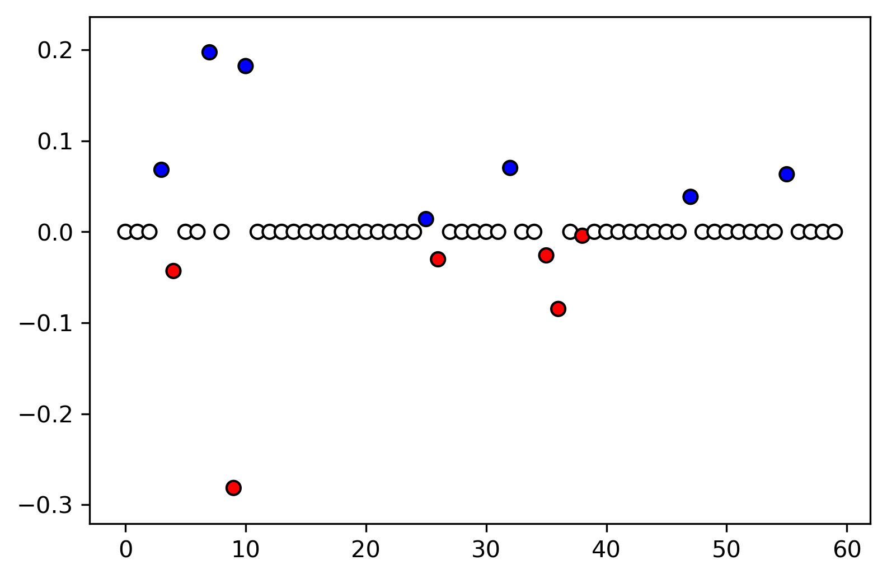
lasso = grid.best_estimator_
print(X_train.shape)
print(np.sum(lasso.coef_ != 0))
(139, 60) 14
Understanding Penalties
Understanding L1 and L2 Penalties
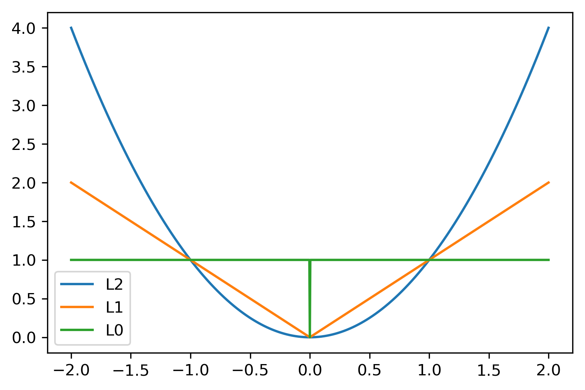
\(\ell_2(w) = \sum_i \sqrt{w_i^2}\)
\(\ell_1(w) = \sum_i \abs{w_i}\)
\(\ell_0(w) = \sum_i \mathbf{1}\{w_i \ne 0\}\)
Understanding L1 and L2 Penalties
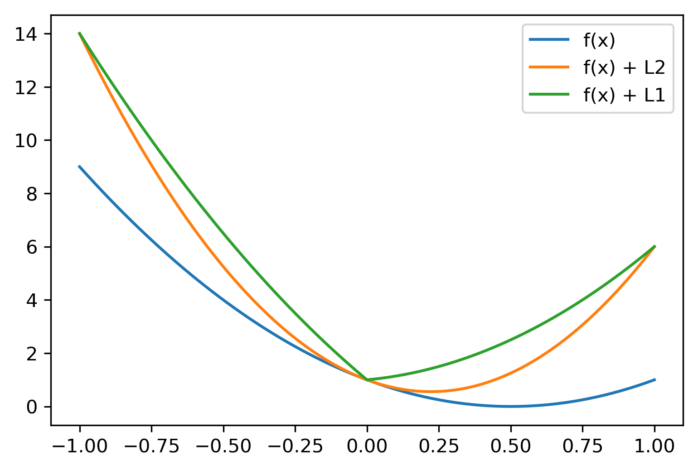
\[ f(x) = (2x-1)^2 \]
\[ f(x) + L2 = (2x-1)^2 + \alpha x^2 \]
\[ f(x) + L1 = (2x-1)^2 + \alpha \abs{x} \]
Understanding L1 and L2 Penalties
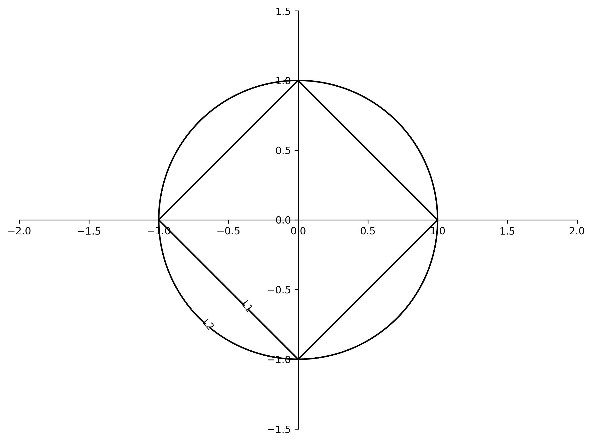
Understanding L1 and L2 Penalties
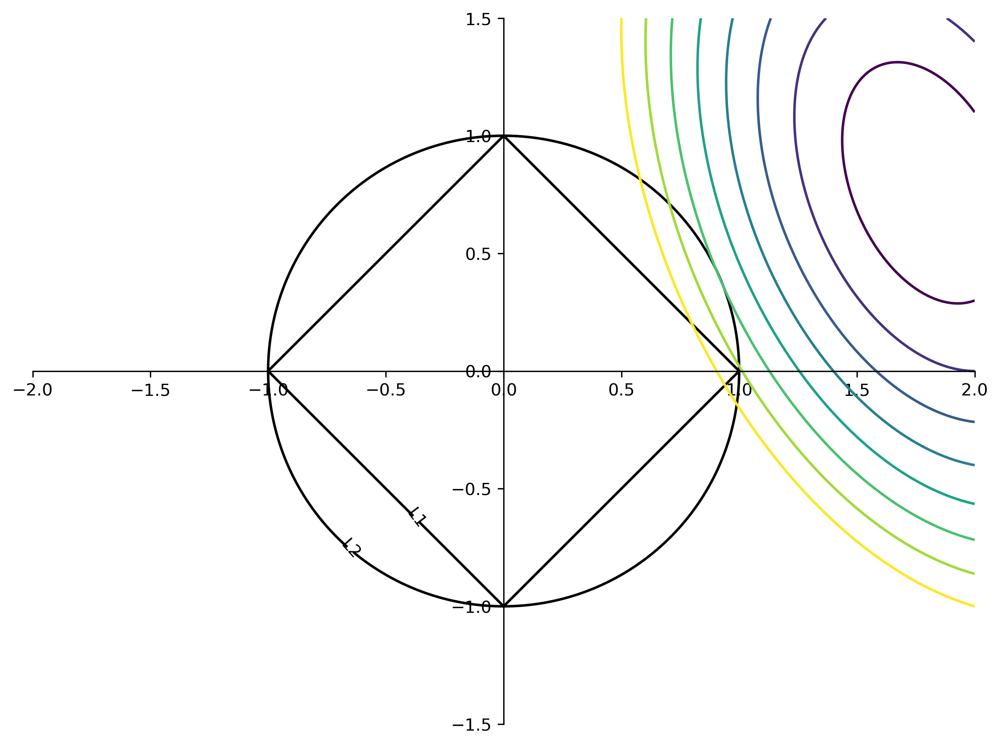
Elastic Net
Elastic Net
\[ \min_{\vec{w} \in \mathbb{R}^p, b\in\mathbb{R}} \sum_{i=1}^m \norm{w^T \vec{x}^{(i)} + b - y^{(i)}}^2 + \alpha_1 \lone{w} + \alpha_2 \ltwo{w}^2 \]
- Combines benefits for ridge and lasso
- Must tune two parameters
Comparing Unit Norm Contours
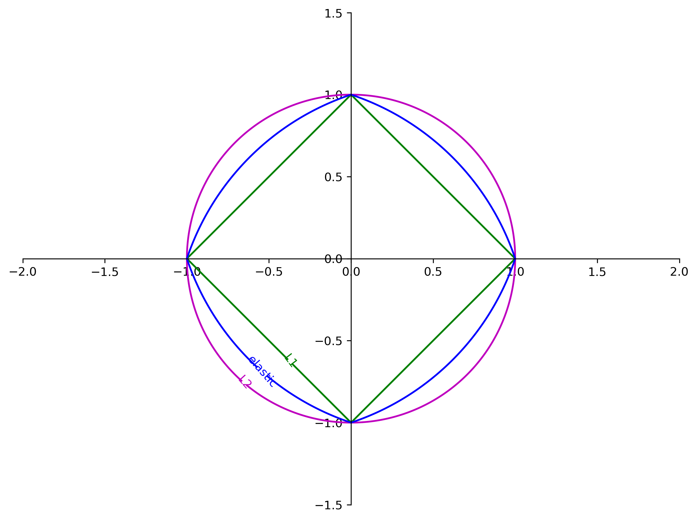
Parameterization in scikit-learn
\[ \min_{\vec{w} \in \mathbb{R}^p, b\in\mathbb{R}} \sum_{i=1}^m \norm{w^T \vec{x}^{(i)} + b - y^{(i)}}^2 + \alpha\eta \lone{w} + \alpha(1-\eta) \ltwo{w}^2 \]
- Where \(\eta\) is the relative amount of L1 penalty.
- In
sklearn:l1_ratio
Grid-Search for Elastic Net
from sklearn.linear_model import ElasticNet
param_grid = {'alpha': np.logspace(-4, -1, 10),
'l1_ratio': [0.01, .1, .5, .8, .9, .95, .98, 1]}
grid = GridSearchCV(ElasticNet(), param_grid, cv=10)
grid.fit(X_train, y_train)
print(grid.best_params_)
print(grid.best_score_)
print((grid.best_estimator_.coef_ != 0).sum())
{'alpha': 0.002154434690031882, 'l1_ratio': 0.5}
0.17410151837759943
16
Analyzing 2D Grid Search
table = pd.pivot_table(pd.DataFrame(grid.cv_results_),
values='mean_test_score', index='param_alpha', columns='param_l1_ratio')
import seaborn as sns
ax = sns.heatmap(table, annot=True, fmt=".2g")
ax.set_yticklabels([round(x,4) for x in table.index])
ax.collections[0].colorbar.set_label(r'$R^2$', rotation=0)
plt.gcf().tight_layout()

Robust Regression
Robust Regression
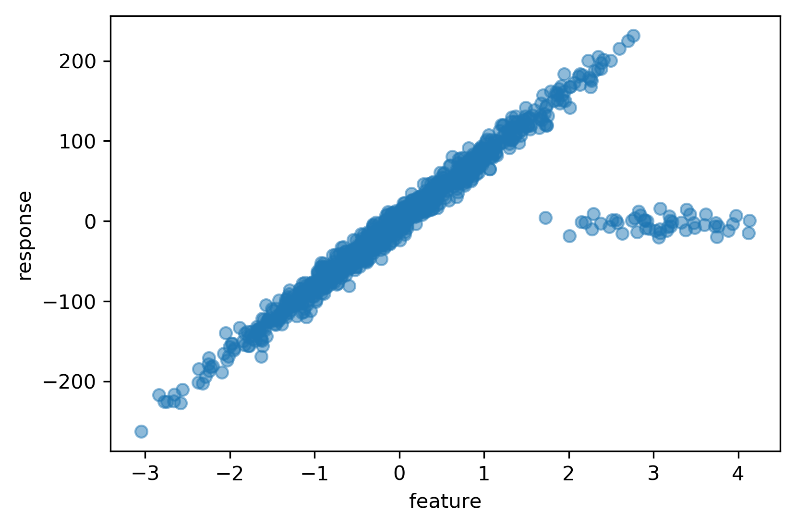
Least Squares Fit to Outlier Data
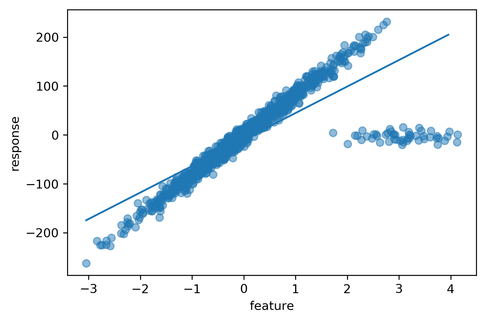
Robust Fit
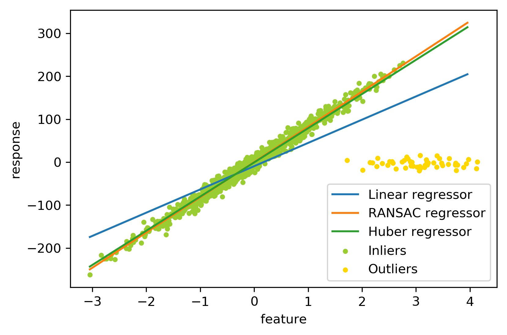
Huber Loss
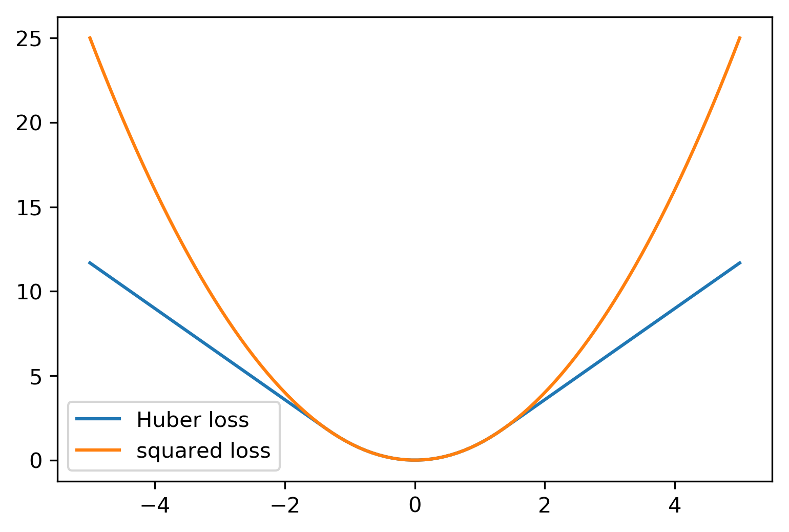
\[ \min_{\vec{w},\sigma} \sum_{i=1}^m \left( \sigma + H\left( \frac{X_i w_i - y_i}{\sigma} \right) \sigma \right) \\+ \alpha \ltwo{w}^2 \]
\[ H(z) = \begin{cases} z^2, & \qquad\text{if $|z| < \epsilon$}\\ 2\epsilon \abs{z} & \qquad\text{else} \end{cases} \]
RANSAC
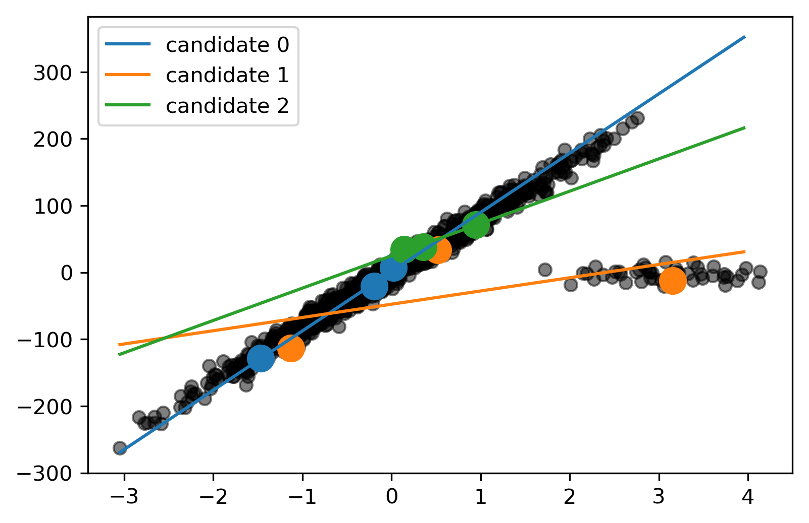
RANSAC
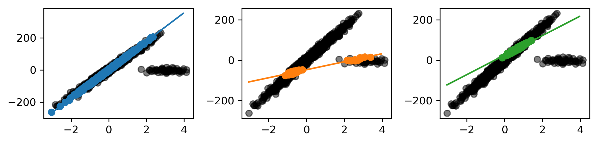